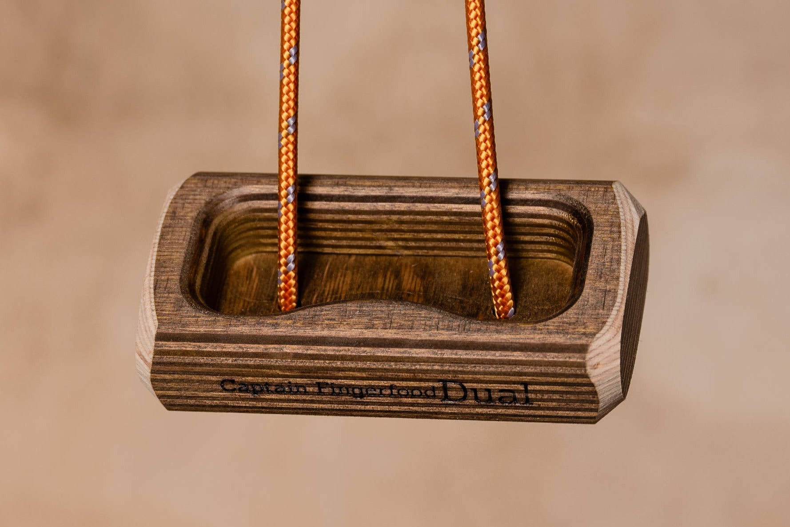
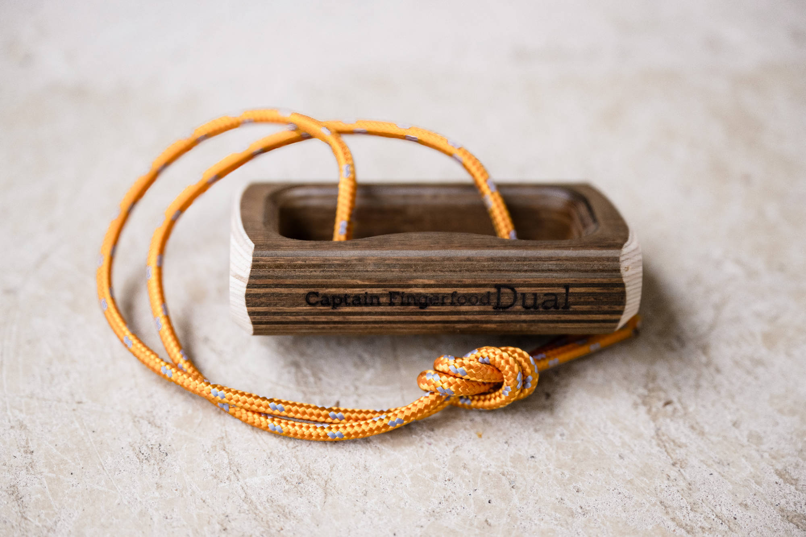
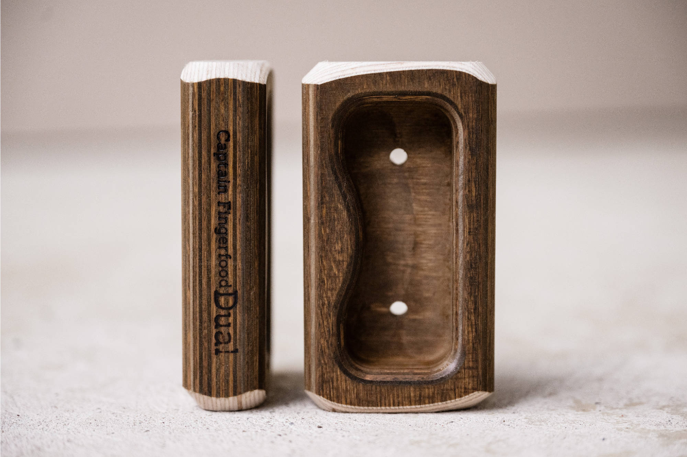

2. captain-fingerfood-dual-title.jpg


exact-revision title image
SHA-256 f57fb751f63c5258e8cb85a9d0f0ad27f6b9cb5eede94b5e1caccc496ec9468e
historical cord evidence; new full visual set approved by user 2026-09-29
Two complementary views show the same DUAL with one curved and one straight opposing lip, continuous cavity, rounded exterior and two daylight floor openings. P1 shows the exterior cord; P2 shows front plus narrow side. The openings support floor-to-back voids, but the complete threading between them is not established. No U channel may be inferred.
Source packet; approved by user 2026-09-29. No CAD geometry authored.

exact-revision title image
SHA-256 f57fb751f63c5258e8cb85a9d0f0ad27f6b9cb5eede94b5e1caccc496ec9468e
historical cord evidence; new full visual set approved by user 2026-09-29

Two complementary views show the same DUAL with one curved and one straight opposing lip, continuous cavity, rounded exterior and two daylight floor openings. P1 shows the exterior cord; P2 shows front plus narrow side. The openings support floor-to-back voids, but the complete threading between them is not established. No U channel may be inferred.
SHA-256 b67f397ceefa3054f7d6ac038a8459fe8389753713ebb97274acc1a17a6de5c8
approved by user 2026-09-29

Two complementary views show the same DUAL with one curved and one straight opposing lip, continuous cavity, rounded exterior and two daylight floor openings. P1 shows the exterior cord; P2 shows front plus narrow side. The openings support floor-to-back voids, but the complete threading between them is not established. No U channel may be inferred.
SHA-256 5b9f30b16919157e9017f51cebe979bd5aae99f69b4c48827c7b5fdb1145649b
approved by user 2026-09-29